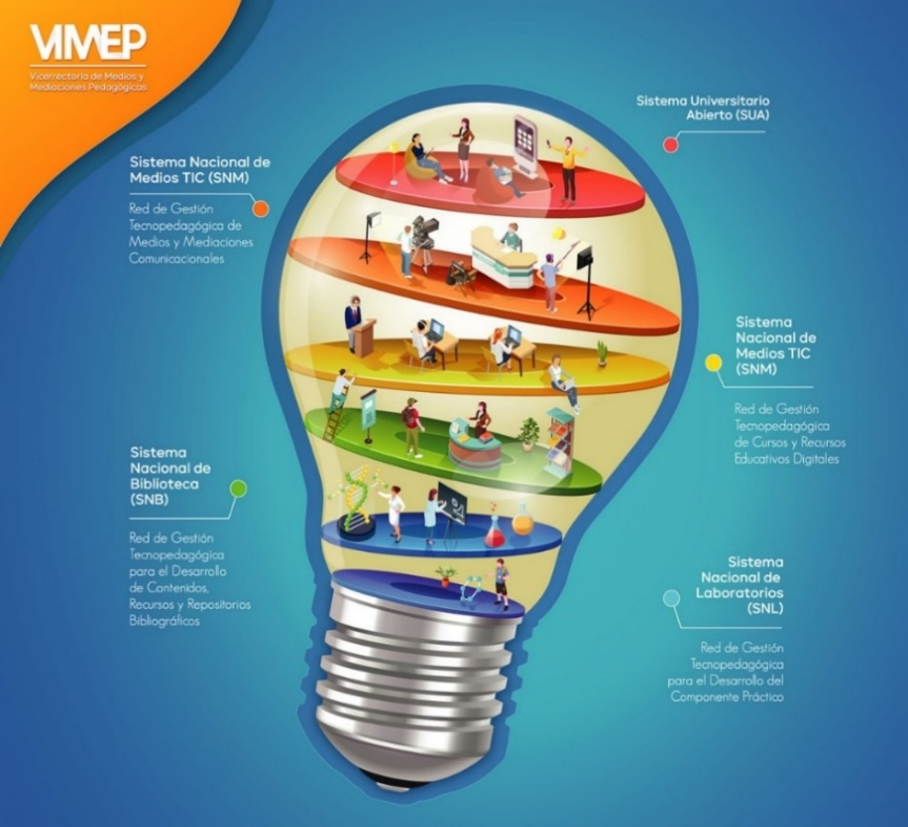
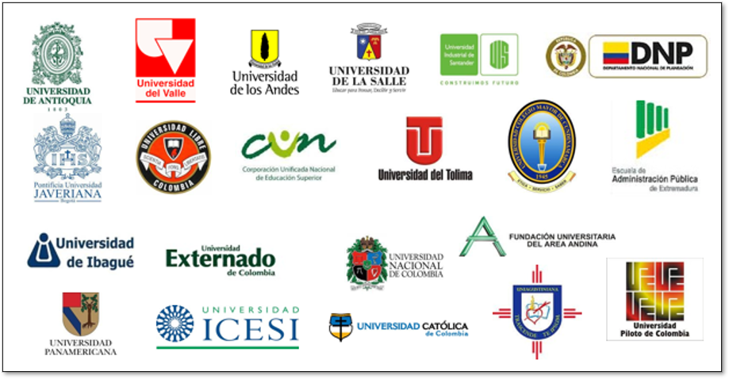

Medios Educativos
Programa de Medicina Veterinaria · Universidad Nacional Abierta y a Distancia — UNAD
2. Redes de Gestión – VIMEP
Clic en la imagen para ampliarLa Vicerrectoría de Medios y Mediaciones Pedagógicas (VIMEP) articula su gestión estratégica a través de cuatro redes especializadas que operan de manera articulada en todo el territorio nacional.
SNB · Biblioteca
Sistema Nacional de Biblioteca.
SNL · Laboratorios
Sistema Nacional de Laboratorios.
SNM · Medios TIC
Sistema Nacional de Medios TIC.
Cursos y RED
Red de Gestión Tecnopedagógica.
Idea clave
Las cuatro redes operan de manera articulada para garantizar la suficiencia, actualización y accesibilidad de los medios educativos.


Adaptado de Vicerrectoría de Medios y Mediaciones Pedagógicas (2025)
Criterio del Par Académico
Articulación clara de las redes de gestión de medios institucionales.
Evidencia que Sustenta
Documento de estructura organizacional de la VIMEP.
3. Sistema Nacional de Biblioteca · h-Biblioteca
Clic en la imagen para ampliarLa h-Biblioteca es un espacio híbrido (físico y virtual) que fortalece la formación e investigación mediante TIC.
Composición
Biblioteca Virtual + 16 bibliotecas físicas a nivel nacional.
Líneas de acción estratégica:
h-Servicios de apoyo
Bases de datos, repositorio institucional, h-libros, h-revistas.
Convenios interbibliotecarios
Alianzas nacionales e internacionales (ej. Banco de la República, Red RUMBO).
Tecnologías de gestión
Autenticación (STADIUM), buscador integrado (EBSCO), catálogo (SIRSI).
Red de atención a usuarios
PQR, soporte técnico y capacitación.
Idea clave
La h-Biblioteca combina recursos físicos y virtuales para garantizar el acceso equitativo al conocimiento en todo el territorio.

Criterio del Par Académico
Cobertura y suficiencia de la h-Biblioteca para el programa.
Evidencia que Sustenta
Portal de la h-Biblioteca UNAD y documentación institucional VIMEP.
4. Recursos y Bases de Datos Especializadas
Suficiencia institucionalBases de datos institucionales de alto impacto
- 01ScienceDirect · Elsevier
- 02Scopus · Multidisciplinar
- 03SpringerLink · Científica
- 04ProQuest · Agricultura, Salud
- 05EBSCOhost · Academic Search Complete, GreenFILE
- 06Ovid · Medica Panamericana · Manual Moderno · Taylor & Francis
Recursos de acceso abierto · Open Access

Adaptado de VIMEP, 2025.
La institución considera que las suscripciones actuales cubren ampliamente las necesidades del pregrado, por lo que no se requieren adquisiciones adicionales exclusivas.
Nota institucional
Criterio del Par Académico
Suficiencia y pertinencia de las bases de datos para el programa.
Evidencia que Sustenta
Catálogo de bases de datos suscritas y acceso abierto vigente.
Escenarios físicos, centros y cobertura nacional
8 zonas · 8 centros0
Laboratorios propios
1.576 m² en total
0
Labs físicos
+ 33 salas de internet
Centros con oferta
- Caribe — Curumaní, Cesar
- Amazonía Orinoquía — Acacias, Meta
- Centro Sur — Cali, Valle
- Sur — Pitalito, Huila
- Centro Bogotá — Bogotá D.C.
- Centro Boyacá — Duitama
- Occidente — Dos Quebradas, Risaralda
- Centro Oriente — Bucaramanga, Santander
Prácticas externas
Convenios con clínicas veterinarias, hospitales, empresas pecuarias y centros de investigación.
Fuente: directorio UNAD, sedes nacionales e internacionales, 2026.
Criterio del Par Académico
Cobertura nacional de escenarios físicos y suficiencia de centros para el programa.
Evidencia que Sustenta
Inventario de laboratorios; directorio de sedes; tabla de centros del programa.
10. Adquisición, Mantenimiento y Bioseguridad
RecursosPlan de adquisición
Evaluación anual de necesidades de equipos, reactivos e insumos (detallado en Anexos).
Mantenimiento
Diagnóstico anual de necesidades (formatos institucionales). Solicitud de insumos y reactivos por periodo.
Convenios externos
49 convenios vigentes para espacios de práctica (clínicas, granjas, etc.).
Bioseguridad
Protocolos alineados con normativas nacionales e internacionales. Uso de la App UNAD LAB para consultar hojas de seguridad (MSDS) mediante códigos QR.
Idea clave
El plan de adquisición, mantenimiento y bioseguridad garantiza la sostenibilidad de los escenarios prácticos del programa.
Criterio del Par Académico
Suficiencia y actualización de recursos y protocolos de bioseguridad.
Evidencia que Sustenta
Anexos del plan de adquisición y protocolos institucionales de bioseguridad.
Sistema Nacional de Medios TIC (SNM)
Medios y mediacionesPropósito: Arquitectura tecnopedagógica para la comunicación, divulgación y apoyo académico.
1. Canal UNAD (YouTube)
Más de 2.000 contenidos, 73.000 suscriptores y 8 millones de vistas.
2. Radio UNAD Virtual (RUV)
Más de 8.000 contenidos emitidos, 2.5 millones de reproducciones. Incluye programas agropecuarios como "Agroparlante".
3. Televisión Abierta
104 programas emitidos en canales nacionales.
4. Webconferencias
Herramienta sincrónica para gestión académica (8.826 organizacionales en 2023; 150 educativas proyectadas para el área pecuaria).
Idea clave
La producción anual supera las 955 piezas gráficas y audiovisuales con accesibilidad nivel A.
Criterio del Par Académico
Diversidad y alcance de los medios comunicacionales institucionales.
Evidencia que Sustenta
Métricas de audiencia y catálogo de contenidos del SNM.
Condición 8
Medios Educativos · Programa de Medicina Veterinaria · UNAD
Volver al inicio del programa